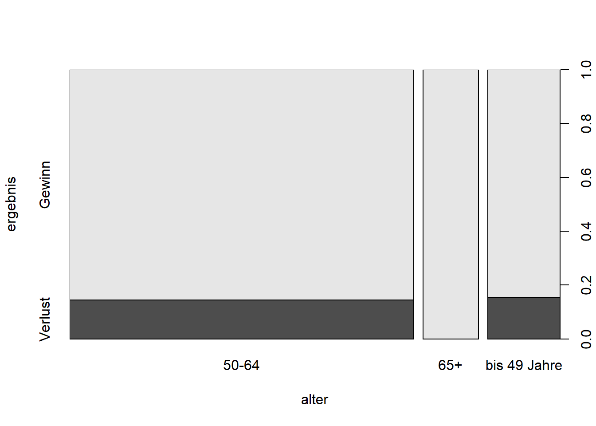
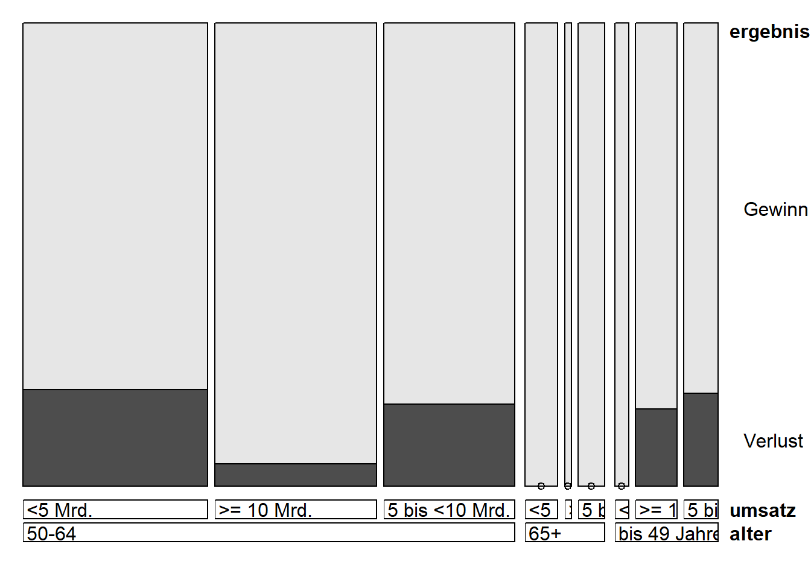

In dieser Analyse soll untersucht werden, ob ein Unternehmen im vergangenen Jahr Gewinn oder Verlust gemacht hat durch das Alter des CEOs und den erzielten Umsatz prognostiziert werden kann.
Ziel ist es: - eine deskriptive Analyse durchzuführen - ein Naïve-Bayes-Klassifikationsmodell zu erstellen - das Modell für beide Klassen getrennt zu evaluieren - und eine Vorhersage für den Fall alter = bis 49 Jahre und umsatz = >= 10 Mrd. durchzuführen.
umsatz
ergebnis <5 Mrd. >= 10 Mrd. 5 bis <10 Mrd. Sum
Gewinn 26 26 22 74
Verlust 5 2 4 11
Sum 31 28 26 85
Unternehmen mit höherem Umsatz (≥ 10 Mrd.) erzielen fast immer Gewinn (26 von 28 Fällen)
Verluste treten häufiger bei niedrigem (<5 Mrd.) oder mittlerem Umsatz (5–10 Mrd.) auf
In der Kategorie <5 Mrd.: 26 Gewinn, 5 Verlust
In der Kategorie ≥10 Mrd.: 26 Gewinn, 2 Verlust
Umsatz ist ein guter Prädiktor für das Ergebnis, je höher der Umsatz, desto größer die Gewinnwahrscheinlichkeit.
Bedingte relative Häufigkeiten
Einfluss der einzelnen Prädiktoren
Zuerst wird untersucht, wie sich das Alter der CEOs auf das Ergebnis auswirkt:
spineplot(ergebnis ~ alter, data = daten)

Bei CEOs der Gruppe „65+“ traten in der Stichprobe keine Verluste auf. Die Altersgruppe „50–64“ ist am häufigsten vertreten und enthält auch die meisten Verluste in absoluten Zahlen. Die Gruppe „bis 49 Jahre“ ist insgesamt kleiner, weist jedoch anteilig ebenfalls Verluste auf.
Jetzt der Einfluss des Umsatzes:
spineplot(ergebnis ~ umsatz, data = daten)abline(h =0.16, col ="red", lwd =2, lty =2)
Die rote Linie markiert einen Verlustanteil von 16%. Die Kategorie „5 bis <10 Mrd.“ liegt mit 15,4% knapp darunter und weist den höchsten relativen Verlustanteil auf. Die Kategorie „<5 Mrd.“ liegt mit 16,1% fast genau auf der Linie, während „≥ 10 Mrd.“ mit 7,1% deutlich darunter liegt.
Je höher der Umsatz, desto geringer ist tendenziell das Verlustrisiko. Umsatz ist somit ein starker und relevanter Prädiktor.
, , ergebnis = Gewinn
umsatz
alter <5 Mrd. >= 10 Mrd. 5 bis <10 Mrd.
50-64 0.79166667 0.95238095 0.82352941
65+ 1.00000000 1.00000000 1.00000000
bis 49 Jahre 1.00000000 0.83333333 0.80000000
, , ergebnis = Verlust
umsatz
alter <5 Mrd. >= 10 Mrd. 5 bis <10 Mrd.
50-64 0.20833333 0.04761905 0.17647059
65+ 0.00000000 0.00000000 0.00000000
bis 49 Jahre 0.00000000 0.16666667 0.20000000
Der Gewinnanteil steigt mit dem Umsatz, besonders in der Altersgruppe „50–64“. In der Gruppe „65+“ treten keine Verluste auf, unabhängig vom Umsatz. Die gemeinsame Betrachtung zeigt deutlich, dass bestimmte Kombinationen aus Alter und Umsatz besonders gewinnträchtig sind.
Dargestellt in einem Doubledecker-Plot:
library(vcd)
Lade nötiges Paket: grid
doubledecker(ergebnis ~ alter + umsatz, data = daten)

In der Altersgruppe „65+“ treten praktisch keine Verluste auf, unabhängig vom Umsatz. In der Gruppe „50–64“ zeigen Unternehmen mit höheren Umsätzen („≥ 10 Mrd.“) deutlich geringere Verlustraten als solche mit mittleren oder niedrigen Umsätzen. Diese Unterschiede verdeutlichen den interaktiven Einfluss der beiden Prädiktoren Alter und Umsatz.
Klassifikation mit Naïve Bayes
library(e1071)set.seed(42)ind =sample(1:nrow(daten), 0.7*nrow(daten))train = daten[ind, ]test = daten[-ind, ]modell =naiveBayes(ergebnis ~ alter + umsatz, data = train)modell
Naive Bayes Classifier for Discrete Predictors
Call:
naiveBayes.default(x = X, y = Y, laplace = laplace)
A-priori probabilities:
Y
Gewinn Verlust
0.8644068 0.1355932
Conditional probabilities:
alter
Y 50-64 65+ bis 49 Jahre
Gewinn 0.6666667 0.1372549 0.1960784
Verlust 0.7500000 0.0000000 0.2500000
umsatz
Y <5 Mrd. >= 10 Mrd. 5 bis <10 Mrd.
Gewinn 0.3333333 0.3725490 0.2941176
Verlust 0.2500000 0.2500000 0.5000000
Die A-priori-Wahrscheinlichkeiten zeigen, dass der Großteil der Unternehmen Gewinne erzielt (ca. 86%) und nur ca. 14% Verluste ausweist.
Bei den bedingten Wahrscheinlichkeiten erkennt man: - In der Altersgruppe „65+“ treten keine Verluste auf (Verlust-Wahrscheinlichkeit = 0) - CEOs im Alter 50–64 haben eine vergleichsweise höhere Wahrscheinlichkeit für Verluste (ca. 75%) - In der Gruppe bis 49 Jahre ist der Verlustanteil bei 25%
Beim Umsatz: - Unternehmen mit „<5 Mrd.“ Umsatz zeigen eine Verlustwahrscheinlichkeit von 25% - Bei „≥ 10 Mrd.“ sinkt diese auf 25% - „5 bis <10 Mrd.“ weisen die höchste Verlustwahrscheinlichkeit auf (50%)
Confusion Matrix and Statistics
Reference
Prediction Gewinn Verlust
Gewinn 23 3
Verlust 0 0
Accuracy : 0.8846
95% CI : (0.6985, 0.9755)
No Information Rate : 0.8846
P-Value [Acc > NIR] : 0.6475
Kappa : 0
Mcnemar's Test P-Value : 0.2482
Precision : 0.8846
Recall : 1.0000
F1 : 0.9388
Prevalence : 0.8846
Detection Rate : 0.8846
Detection Prevalence : 1.0000
Balanced Accuracy : 0.5000
'Positive' Class : Gewinn
Das Modell erzielt eine Accuracy (Trefferquote) von 88%, was zunächst sehr hoch wirkt. Allerdings liegt die No Information Rate (NIR) ebenfalls bei 88%, was bedeutet, dass ein Modell, das immer „Gewinn“ vorhersagt, eine ähnliche Genauigkeit erreichen würde.
Der Recall (Wiederfindungsrate) für „Gewinn“ beträgt 100%. Das heißt, alle tatsächlichen Gewinn-Unternehmen im Testdatensatz wurden korrekt erkannt
Die Precision für „Gewinn“ liegt bei 88%, was bedeutet, dass 88% der als „Gewinn“ vorhergesagten Unternehmen tatsächlich Gewinne erzielt haben
Der F1-Wert, der Precision und Recall kombiniert, liegt mit 0.94 ebenfalls sehr hoch
Problematisch ist jedoch, dass keine Verluste erkannt wurden (alle drei Verluste wurden als Gewinn klassifiziert). Dies zeigt sich in der Balanced Accuracy, die nur 50% beträgt.
Insgesamt lässt sich festhalten: Das Modell ist stark auf die dominante Klasse „Gewinn“ fokussiert und erkennt Gewinne sehr zuverlässig, während Verluste systematisch übersehen werden. Das ist eine direkte Folge der unbalancierten Datenverteilung (viele Gewinne, wenige Verluste).
Confusion Matrix and Statistics
Reference
Prediction Gewinn Verlust
Gewinn 23 3
Verlust 0 0
Accuracy : 0.8846
95% CI : (0.6985, 0.9755)
No Information Rate : 0.8846
P-Value [Acc > NIR] : 0.6475
Kappa : 0
Mcnemar's Test P-Value : 0.2482
Precision : NA
Recall : 0.0000
F1 : NA
Prevalence : 0.1154
Detection Rate : 0.0000
Detection Prevalence : 0.0000
Balanced Accuracy : 0.5000
'Positive' Class : Verlust
Wenn „Verlust“ als positive Klasse betrachtet wird, zeigt sich die Schwäche des Modells sehr deutlich:
Der Recall (Wiederfindungsrate) für Verluste beträgt 0%, d.h. kein einziger tatsächlicher Verlustfall wurde erkannt
Die Precision ist nicht definiert (NA), da das Modell niemals „Verlust“ vorhersagt (es gibt keine Vorhersagen für diese Klasse)
Der F1-Wert kann deshalb ebenfalls nicht berechnet werden (NA)
Die Balanced Accuracy beträgt nur 50%, was einem Zufallsniveau entspricht
Fazit: Das Modell ist völlig ungeeignet, um Verluste vorherzusagen. Es klassifiziert alle Beobachtungen als „Gewinn“, was ein typisches Problem bei stark unbalancierten Daten ist (hier: sehr wenige Verluste).
Vorhersage
neu =data.frame(alter ="bis 49 Jahre", umsatz =">= 10 Mrd.")predict(modell, neu)
[1] Gewinn
Levels: Gewinn Verlust
predict(modell, neu, type ="raw")
Gewinn Verlust
[1,] 0.8816705 0.1183295
Für ein Unternehmen mit einem CEO unter 49 Jahren und einem Umsatz von ≥ 10 Mrd. prognostiziert das Modell mit einer Wahrscheinlichkeit von 88% einen Gewinn. Die Wahrscheinlichkeit für einen Verlust liegt nur bei 12%.
Das Modell bewertet in diesem Fall die Kombination aus jungem CEO und hohem Umsatz als klar gewinnträchtig.
Fazit
Die Analyse zeigt, dass sich das Unternehmensergebnis teilweise durch Alter und Umsatz vorhersagen lässt. Besonders der Umsatz hat einen deutlichen Einfluss auf die Erfolgswahrscheinlichkeit. Der Doubledecker-Plot verdeutlicht den gemeinsamen Einfluss beider Prädiktoren.
Das Modell eignet sich gut zur Identifikation von Gewinnunternehmen, weist jedoch klare Schwächen bei der Erkennung von Verlusten auf, insbesondere aufgrund der unausgeglichenen Klassenverteilung. Verbesserungen wären beispielsweise durch Oversampling, die Anpassung der Klassengewichte oder den Einsatz alternativer Klassifikationsverfahren möglich.